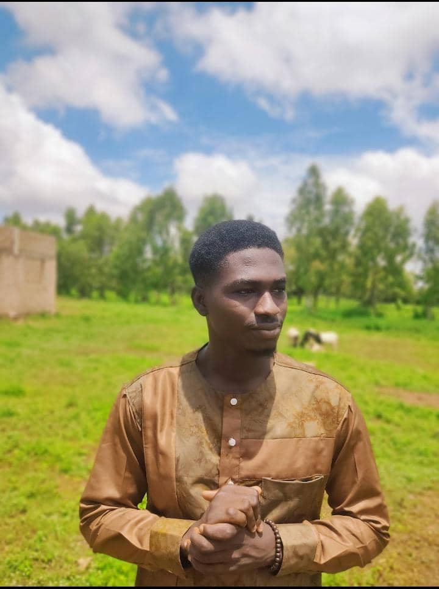

À propos de moi

Bonjour, je suis Jude, développeur passionné avec une grande curiosité pour le web et ses possibilités infinies. Je vous invite à découvrir mon univers à travers ce portfolio.
Témoignages
"Jude est un développeur talentueux, passionné par son travail. Sa capacité à apprendre et s’adapter est remarquable."
– Client satisfait